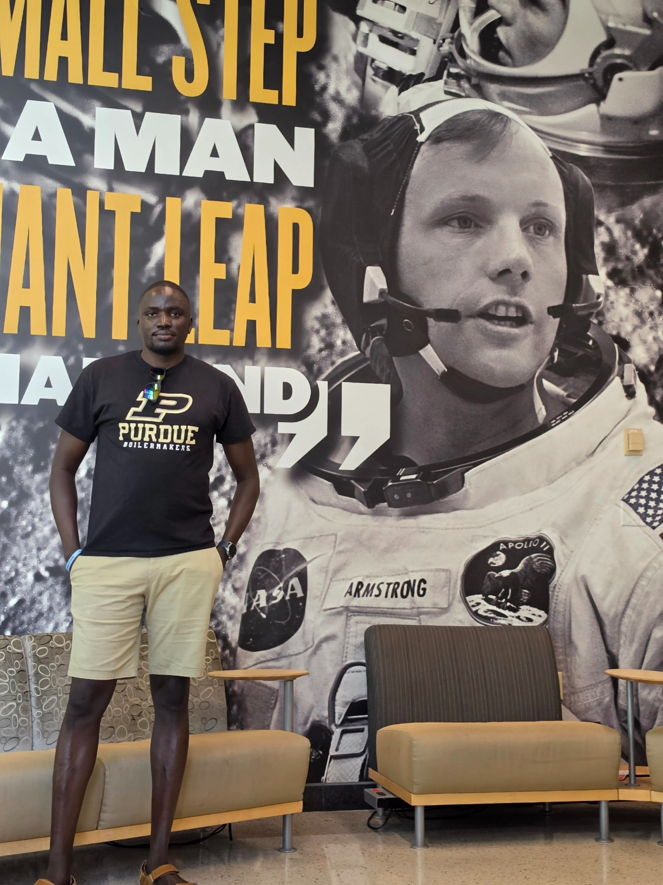

Advanced Air Mobility and airport integration
Assessing where, when, and under what safety and sustainability conditions AAM operations could be integrated at large U.S. hub airports.

Aviation · Transportation · Safety
Aviation and Aerospace Engineer and Researcher
I study how aviation technologies, airports, institutions, and public policy interact, with a focus on safe integration, transportation-system value, and practical decision support.
PhD student in Aviation and Aerospace Technology, Computational Science and Engineering Track, at Purdue University.
My work treats aviation as both a technical system and a public infrastructure system. Three related research areas organize the current portfolio.
Assessing where, when, and under what safety and sustainability conditions AAM operations could be integrated at large U.S. hub airports.
Examining how regulation, conflict, state capacity, infrastructure, and system resilience shape aviation-safety outcomes across countries.
Using GIS, scenario analysis, and multi-criteria methods to make safety constraints, accessibility, and public trade-offs visible to decision-makers.
Methods: ArcGIS Pro, spatial screening, AHP and TOPSIS, sensitivity analysis, panel count models, Bayesian analysis, simulation, systematic review, and thematic synthesis.
Civil Aviation Safety Disparities Across National Air Transport Systems: Evidence from a Global Panel, 1996–2023
Advanced Air Mobility at Large Hub Airports: Analytical Fragmentation and the Evidence Base for Metropolitan Readiness
Cognitive and Human-Automation Challenges in UAS-AAM Integration: A Thematic Review
The Implementation of Total Productive Maintenance (TPM) within the East Africa Aviation Maintenance Repair and Overhaul (MRO) Industry
Finite Element Simulation of the Stretch-Forming of Aircraft Skins
Aviation Knowledge and Sustainability: Epistemological Gaps in Decarbonization Across the Global North and South
Navigating the Perils: Operational Safety in Conflict Zones
Information Paper on ICAO’s High-Level Conference on COVID-19 Annex 19 Related Outcomes
Purdue University · Computational Science and Engineering Track
University of South Wales · Distinction
Shenyang Aerospace University
ArcGIS Pro, Python, MATLAB, SAS, Arena Simulation, VOSviewer, LaTeX, CAD/CAM, ANSYS, MSC Patran, computational fluid dynamics, finite element analysis, statistical modeling, spatial decision analysis, and scientific visualization.
Mission Aviation Fellowship, South Sudan · safety oversight, SMS, risk assessment, and operational assurance
Mission Aviation Fellowship, South Sudan · quality assurance, safety, security, auditing, and continuous improvement
International Civil Aviation Organization, Montreal · Annex 19 and Safety Management Panel technical work
University of South Wales · aviation-engineering instruction and laboratory support
South Sudan Civil Aviation Authority · technical inspection and regulatory-compliance support
Contact
The most direct way to reach me is by email.